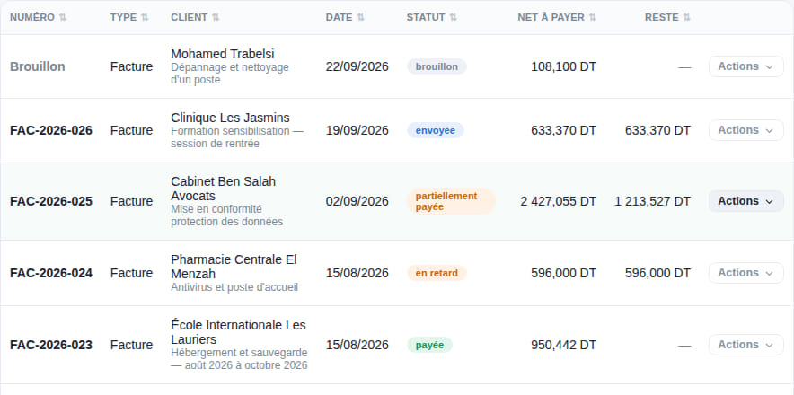
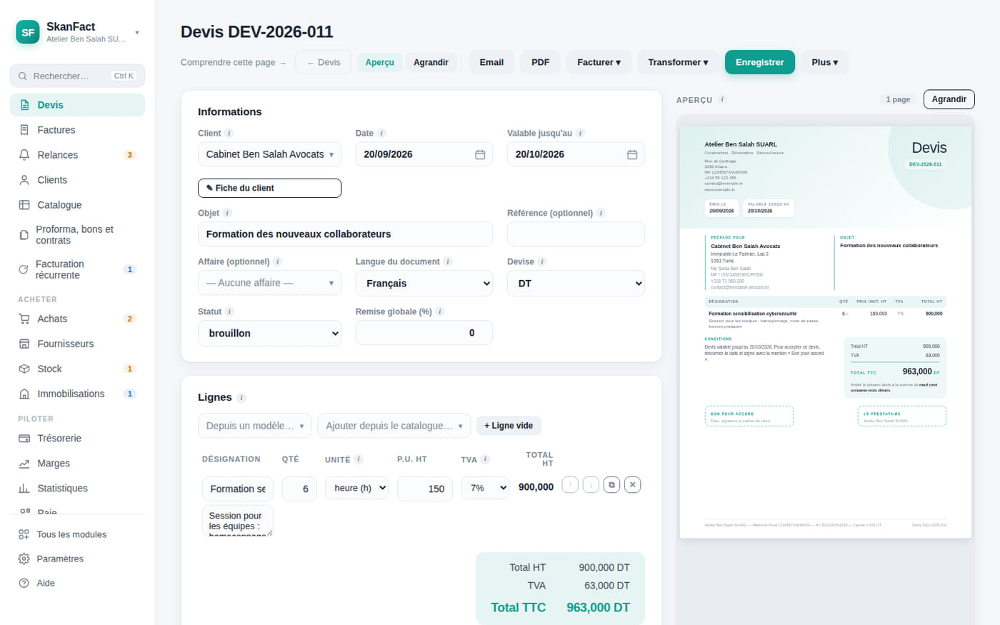
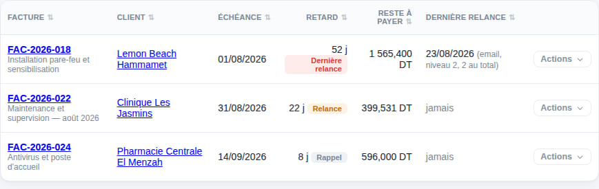
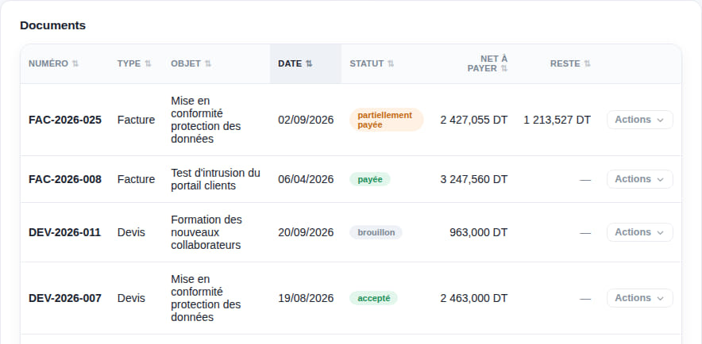

Accueil Devis et factures
Ce que vous faites tous les jours
Du devis à l'encaissement, sans rien retaper.
Un devis accepté devient une facture d'un clic. La facture réglée change de statut toute seule. Celle qui traîne remonte le matin, avec sa relance déjà écrite.

L'éditeur
Vous voyez le document pendant que vous le tapez.
Le formulaire à gauche, la page imprimée à droite. Plus de surprise au moment d'envoyer le PDF au client : c'est exactement ce que vous aviez sous les yeux.

Les pièces
Toutes celles dont une petite entreprise a besoin.
Chacune porte sa numérotation, ses règles et son statut. Une facture émise se verrouille : on la corrige par un avoir, comme le veut la comptabilité.

Se faire payer
La relance est déjà écrite, il reste à l'envoyer.
L'application suit l'âge de chaque impayé et propose le message qui correspond — le premier rappel n'a pas le ton du troisième.
Vos clients
Une fiche qui raconte toute la relation.
Les documents, les affaires, les contrats, le matériel installé chez lui et ses garanties, ce qu'il vous doit et comment il paie d'habitude — au même endroit.

Faites votre premier devis ce matin.
Trente jours d’essai, toutes les fonctions, sans carte bancaire.
Mac et Windows · aucune carte bancaire · vos données restent chez vous